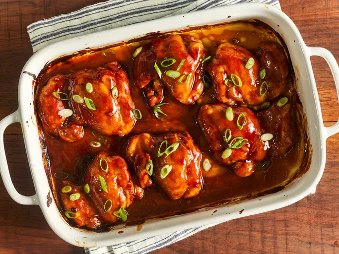

Teriyaki Chicken

Baked Teriyaki chicken
A savory baked teriyaki chicken recipe, with sauce made from scratch. Quick and easy!
Ingredients
- 0.5 cup white sugar
- 0.5 cup soy sauce
- 0.25 cup cider vinegar
- 1 tablespoon cornstarch
- 1 tablespoon cold water
- 1 clove garlic, minced
- 0.5 teaspoon ground ginger
- 0.25 teaspoon ground black pepper
- 12 boneless, skinless chicken thighs
Steps
- Preheat the oven to 425 degrees F (220 degrees C). Lightly grease a 9x13-inch baking dish.
- Combine sugar, soy sauce, cider vinegar, cornstarch, cold water, garlic, ginger, and pepper in a small saucepan over low heat. Simmer, stirring frequently, until teriyaki sauce thickens and bubbles, 3 to 5 minutes. Remove from the heat.
- Place chicken thighs in the prepared baking dish. Brush both sides of each thigh with the sauce. Reserve any extra sauce for basting.
- Bake in the preheated oven for 30 minutes.
- Flip chicken and brush with sauce. Continue to bake, basting with remaining sauce every 10 minutes, until no longer pink and juices run clear, 20 to 30 more minutes.
- Serve hot and enjoy!
Home